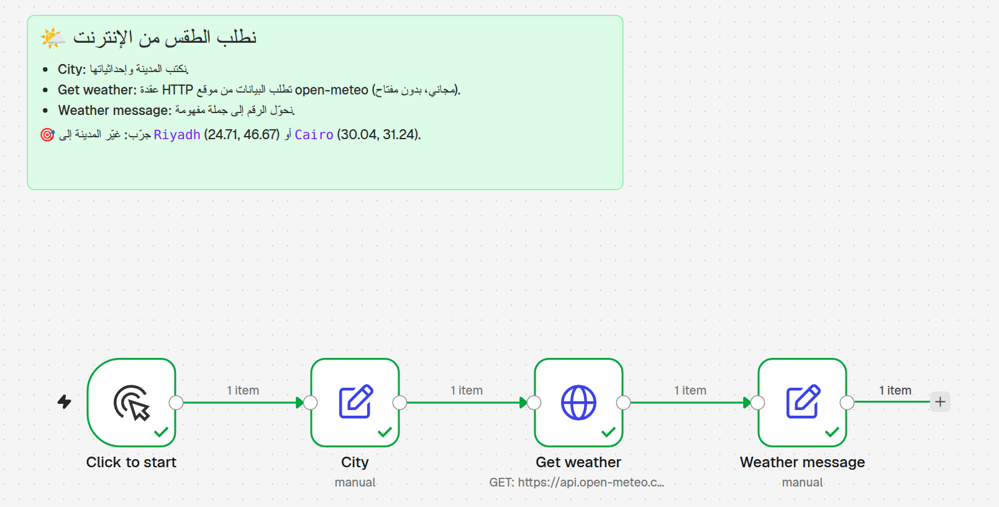

أهلاً وسهلاً بالجميع! هذه أول حصة في دورة n8n من الصفر. قبل أن نبدأ أريد أن أطمئنكم: لا تحتاجون أي خبرة تقنية، ولن نثبّت أي برنامج اليوم. كل ما نحتاجه متصفح وفضول. اليوم سنبني «الصورة في رأسنا»: ما هي الأتمتة، وكيف تتحدث التطبيقات مع بعضها، وما معنى كلمات مثل API و JSON و Webhook التي ستسمعونها كثيراً. وفي النهاية سنرى أين يأتي دور n8n. سؤال سريع للقاعة: من منكم سمع كلمة API من قبل؟ ارفعوا أيديكم… ومن لم يسمع بها أبداً؟ رائع، أنتم بالضبط من صُمّمت له هذه الحصة. هيا نبدأ.
TODAY
Today's Journey
رحلتنا اليوم: أربع محطات
⚙️
الأتمتةAutomation
لماذا نترك الحاسوب يعمل عنّا؟
🤵
كيف تتحدث التطبيقات؟How apps talk
الزبون، النادل، والمطبخ.
📋
البيانات والجرسJSON & Webhooks
الاستمارة، الجرس، والمفاتيح.
🧱
أين يأتي n8n؟Where n8n fits
لوحة ليغو للأتمتة.
🎯 هدف اليومنفهم الفكرة أولاً — لا برمجة، لا تثبيت. فقط متصفح وفضول.
هذه رحلتنا اليوم في أربع محطات. المحطة الأولى: الأتمتة، أي كيف نجعل الحاسوب يقوم بالمهام المتكررة بدلاً منا. الثانية: كيف تتحدث التطبيقات مع بعضها، وهنا سنتعرف على الزبون والنادل والمطبخ. الثالثة: البيانات والجرس، أي شكل المعلومات التي تتنقل بين التطبيقات، وكيف يخبرنا تطبيق بأن شيئاً حدث، وكيف نحمي مفاتيحنا. والرابعة: أين يأتي n8n في كل هذا. بعدها مختبر صغير على المتصفح. لاحظوا: لا برمجة اليوم ولا تثبيت. إذا ضاعت منكم كلمة، فهناك جدول كلمات في آخر الحصة وفي الورقة المطبوعة. هيا إلى المحطة الأولى.
PART 1
Automation
الأتمتة: دَع الحاسوب يعمل عنك
المحطة الأولى: الأتمتة. الكلمة تبدو كبيرة، لكن فكرتها بسيطة جداً: أن تشرح خطوات مهمة ما مرة واحدة، ثم يكررها الحاسوب عنك كل مرة، بدون تعب وبدون نسيان. قبل أن أعطيكم أي تعريف، أريد أن نبدأ منكم أنتم ومن يومكم العادي. فكروا للحظة: ما الشيء الذي تفعلونه كل يوم بنفس الطريقة تماماً، وتشعرون أنه يضيّع وقتكم؟ احتفظوا بالجواب في رؤوسكم، سنحتاجه بعد قليل في تمرين صغير، ثم في المختبر في آخر الحصة.
01 · THE PROBLEM
Your Repetitive Day
يومك المتكرر… هل يبدو مألوفاً؟
📧 ← 📊
نسخ الإيميلات إلى جدول
كل طلب جديد… تنسخه يدوياً إلى Excel سطراً سطراً.
💬
نفس الرد كل يوم
«شكراً، وصلنا طلبك وسنرد قريباً» — للمرة المئة!
📈
التقرير اليومي
تجمع الأرقام كل صباح وترسلها للمدير بنفس الشكل.
⏱ كم دقيقة في الأسبوع تضيع على مهام كهذه؟
هذه ثلاث مهام متكررة نراها كثيراً. الأولى: نسخ بيانات الطلبات من الإيميل إلى جدول Excel أو Google Sheets سطراً سطراً. الثانية: كتابة نفس الرد للمرة المئة: شكراً، وصلنا طلبك. الثالثة: تجهيز تقرير يومي للمدير بنفس الطريقة كل صباح. اسألوا القاعة: من يفعل شيئاً من هذه الثلاثة؟ ومن عنده مهمة رابعة مختلفة؟ خذوا مثالين أو ثلاثة من الحضور واكتبوها على اللوح، سنعود إليها في المختبر. ثم اطرحوا السؤال الكبير: كم دقيقة في الأسبوع تضيع على هذه المهام؟ لا تجيبوا الآن، لنحسبها معاً في الشريحة التالية.
01 · TRY IT
Calculate Your Time
احسب وقتك — تمرين دقيقة واحدة
10دقائق للمهمة
×
3مرات في اليوم
×
5أيام في الأسبوع
=
150دقيقة أسبوعياً ≈ ساعتان ونصف
وفي السنة (50 أسبوعاً): ≈ 125 ساعة — أكثر من 15 يوم عمل! 😮
مثال توضيحي · Example numbers✍️ الآن دورك: مهمة واحدة من يومك
لنحسب معاً بمثال توضيحي، وليس إحصائية. مهمة تأخذ عشر دقائق، نفعلها ثلاث مرات في اليوم، خمسة أيام في الأسبوع: هذا مئة وخمسون دقيقة، أي ساعتان ونصف كل أسبوع. وإذا ضربناها في خمسين أسبوعاً، نصل إلى حوالي مئة وخمس وعشرين ساعة في السنة، أي أكثر من خمسة عشر يوم عمل كامل! الآن دوركم: خذوا ورقة واكتبوا مهمة واحدة من يومكم، وطبّقوا نفس المعادلة: الدقائق ضرب المرات ضرب الأيام. أعطوهم دقيقة واحدة فقط. ثم اسألوا: من وصل لأكبر رقم؟ هذا الرقم هو الوقت الذي يمكن أن تستعيدوه بالأتمتة.
02 · WHAT IS IT?
Automation = A Recipe
الأتمتة مثل وصفة طبخ… أو خط إنتاج
من حياتنا📜🍰
وصفة / خط إنتاج
خطوات ثابتة، بنفس الترتيب، وكل مرة نفس النتيجة.
=
في التقنية⚙️🔁
سير العمل Workflow
تكتب الخطوات مرة واحدة، والحاسوب ينفذها وحده كل مرة.
📌 التعريفالأتمتة = أن تشرح الخطوات مرة واحدة، فيكررها الحاسوب عنك آلاف المرات.
الآن التعريف. تخيلوا وصفة طبخ: خطوات ثابتة، بنفس الترتيب، وكل مرة تتبعونها تحصلون على نفس الكعكة. أو خط إنتاج في مصنع: كل محطة تقوم بخطوة وتمرر القطعة للمحطة التالية. الأتمتة هي نفس الفكرة، لكن الذي ينفذ الخطوات هو الحاسوب. أنتم تكتبون الوصفة مرة واحدة، وهو يطبخها كل مرة. وفي عالم الأتمتة نسمي هذه الوصفة Workflow، أي سير العمل. سنسمع هذه الكلمة كثيراً في n8n. سؤال للقاعة: في المطبخ، من هو الذي يكتب الوصفة ومن الذي ينفذها؟ أنتم تكتبون الوصفة، والحاسوب هو الطباخ الذي لا يتعب.
02 · THE SHAPE
Trigger → Steps → Result
كل أتمتة لها ثلاثة أجزاء فقط
📧New emailوصل بريد جديد
📊Add rowأضف صفاً للجدول
💬Replyأرسل رداً تلقائياً
✅Doneالنتيجة
⚡ المُشغِّلTrigger
متى نبدأ؟ مثل المنبّه ⏰ أو جرس الباب 🔔
⚙️ الخطواتSteps
ماذا نفعل؟ ننسخ، نرسل، نحفظ…
🎯 النتيجةResult
ماذا نحصل في النهاية؟
كل أتمتة في العالم، مهما كانت كبيرة، لها ثلاثة أجزاء فقط. أولاً المُشغّل Trigger: متى نبدأ؟ مثل المنبّه الذي يرن، أو إيميل جديد يصل. ثانياً الخطوات Steps: ماذا نفعل؟ هنا نضيف صفاً في الجدول ونرسل رداً تلقائياً. ثالثاً النتيجة Result: ماذا نحصل في النهاية؟ طلب مسجل وزبون حصل على رد. لاحظوا أن الرسم يسير من اليسار إلى اليمين، تماماً كما سترونه في n8n لاحقاً، حتى لو كنا نقرأ العربية من اليمين. سؤال للقاعة: في مثال التقرير اليومي، ما هو الـ Trigger؟ الجواب: الساعة الثامنة صباحاً، مثل المنبّه.
02 · WHY?
Why It Matters
لماذا نهتم بالأتمتة؟
⏱️
يوفّر الوقتTime
مثلاً: 150 دقيقة أسبوعياً تعود لك.
✅
أخطاء أقلFewer mistakes
الحاسوب لا يتعب ولا يخطئ في النسخ.
🌙
يعمل 24/7Always on
يرد على الزبون الساعة 3 فجراً وأنت نائم.
📈
يكبر معكScale
10 طلبات أو 1000 طلب — نفس الجهد منك.
⚠️ تنبيهالأرقام هنا أمثلة توضيحية للفهم، وليست إحصائيات.
لماذا نتعب أنفسنا في تعلم الأتمتة؟ أربعة أسباب. الوقت: تلك الدقائق التي حسبناها تعود لكم. أخطاء أقل: الإنسان يتعب في آخر النهار وينسخ رقماً خطأ، والحاسوب لا يتعب. يعمل على مدار الساعة: يرد على الزبون الساعة الثالثة فجراً وأنتم نائمون. ويكبر معكم: عشرة طلبات أو ألف طلب، نفس الجهد منكم. تنبيه مهم: الأرقام على هذه الشريحة أمثلة توضيحية للفهم، وليست إحصائيات من دراسة. سؤال للقاعة: أي سبب من الأربعة هو الأهم لعملكم أنتم؟ خذوا إجابتين أو ثلاثاً ثم انتقلوا.
03 · EVERYDAY
You Already Use Automation!
أنت تستخدم الأتمتة كل يوم… بدون أن تنتبه
🏦
رسالة البنكBank SMS
⚡ تدفع بالبطاقة ← 📱 تصلك رسالة خلال ثوانٍ
📦
تأكيد الطلبOrder email
⚡ تشتري أونلاين ← 📧 إيميل تأكيد فوراً
⏰
منبّه الهاتفPhone alarm
⚡ الساعة 6:30 ← 🔔 يرن كل يوم وحده
📨
الرد التلقائيAuto-reply
⚡ رسالة وأنت في إجازة ← ✉️ رد جاهز يُرسَل
💡 لاحظكلها نفس الشكل: Trigger ← خطوات ← نتيجة.
الخبر الجيد: أنتم تستخدمون الأتمتة كل يوم بدون أن تنتبهوا. عندما تدفعون بالبطاقة، تصلكم رسالة من البنك خلال ثوانٍ. لا يوجد موظف يكتبها لكم! الـ Trigger هنا هو الدفع، والنتيجة رسالة. عندما تشترون من متجر إلكتروني، يصلكم إيميل تأكيد فوراً. منبّه الهاتف أبسط أتمتة: وقت محدد يشغّل صوتاً كل يوم. والرد التلقائي عندما تكونون في إجازة. تمرين سريع: اطلبوا من الحضور تحديد الـ Trigger والنتيجة في كل مثال بصوت عالٍ. ثم اسألوا: من يعرف مثالاً خامساً من حياته اليومية؟
03 · AT WORK
Automation at Work
أمثلة من أعمال صغيرة تشبه أعمالكم
🛒
متجرShop
طلب جديد ← رسالة شكر + تحديث المخزون + تنبيه للمستودع
🏥
عيادةClinic
قبل الموعد بيوم ← تذكير تلقائي للمريض برسالة
🏫
مدرسةSchool
غياب طالب ← رسالة لولي الأمر + سطر في جدول الحضور
💻
مستقلFreelancer
دفعة وصلت ← فاتورة + إيميل شكر + تسجيل في جدول
🤔 ما المهمة التي تتمنى أن تتم وحدها في عملك؟
والآن أمثلة من أعمال صغيرة تشبه أعمالكم. متجر: طلب جديد يرسل رسالة شكر، ويحدّث المخزون، وينبّه المستودع. عيادة: قبل الموعد بيوم، تذكير تلقائي للمريض، وهذا يقلل المواعيد الضائعة. مدرسة: غياب طالب يرسل رسالة لولي الأمر ويسجّل في جدول الحضور. مستقل أو فريلانسر: دفعة تصل، فتُصنع فاتورة وتُرسل رسالة شكر وتُسجّل في جدول الحسابات. لاحظوا أن كل مثال فيه Trigger ثم عدة خطوات. سؤال للقاعة: ما المهمة التي تتمنون أن تتم وحدها في عملكم؟ اكتبوها على ورقة، ستحتاجونها في المختبر.
🎬 VIDEO
What is Automation?
فيديو: ما هي الأتمتة؟
👀 أثناء المشاهدة: ابحث عن الـ Trigger والخطوات والنتيجة.
الآن فيديو قصير يلخص كل ما قلناه عن الأتمتة. قبل التشغيل أعطوا القاعة مهمة: أثناء المشاهدة، ابحثوا عن الـ Trigger والخطوات والنتيجة في الفيديو. شغّلوا الفيديو بالضغط على زر التشغيل، وتأكدوا من سماعات القاعة قبل الحصة. بعد الفيديو اسألوا: ما هو الـ Trigger الذي رأيتموه؟ وما النتيجة؟ إذا لم يعمل الفيديو لأي سبب، لا مشكلة: لخّصوا شفهياً بثلاث كلمات: Trigger ثم Steps ثم Result، وارسموها على اللوح كأسهم. بعدها ننتقل إلى الجزء الثاني: كيف تتحدث التطبيقات مع بعضها.
PART 2
How Apps Talk
كيف تتحدث التطبيقات مع بعضها؟
المحطة الثانية: كيف تتحدث التطبيقات مع بعضها؟ عندما يصلكم إيميل ثم يظهر سطر جديد في جدول Google Sheets، كيف عرف الجدول بما حدث؟ التطبيقات لا تتكلم العربية ولا الإنجليزية، لكنها تتبادل رسائل بطريقة منظمة جداً. في هذا الجزء سنستخدم تشبيهاً واحداً من البداية للنهاية: المطعم. فيه زبون، وفيه نادل، وفيه مطبخ. احفظوا هذا المطعم جيداً، لأننا سنعود إليه في كل الحصص القادمة، وكل كلمة تقنية سنربطها بشيء في المطعم.
04 · THE INTERNET
Client & Server
الإنترنت = زبائن يطلبون… ومطابخ تحضّر
📱Clientأنت = الزبون
🍳Serverالخادم = المطبخ
📱Clientوصلك الطبق 😋
📱 العميلClient
من يطلب: هاتفك، متصفحك، أو n8n نفسه.
🖥️ الخادمServer
حاسوب قوي في مكان ما، يحضّر الرد ويرسله.
الإنترنت ببساطة طريق يوصل الطلبات بين طرفين. الطرف الأول هو العميل Client: الذي يطلب. هاتفكم، المتصفح، أو n8n نفسه. الطرف الثاني هو الخادم Server: حاسوب قوي في مكان ما يحضّر الرد. تماماً مثل المطعم: أنتم الزبون، والخادم هو المطبخ. أنتم ترسلون طلباً Request، والمطبخ يرد عليكم Response. كل مرة تفتحون إنستغرام، هاتفكم يطلب الصور من خادم إنستغرام، والخادم يرسلها. سؤال للقاعة: عندما تفتحون تطبيق الطقس على الهاتف، من العميل ومن الخادم؟ الهاتف هو العميل، وخادم شركة الطقس هو المطبخ.
04 · API
API = The Waiter
ما هي الـ API؟ تخيّل نادل المطعم
من حياتنا🤵🍽️
النادل في المطعم
لا تدخل المطبخ بنفسك. تطلب من النادل، فيوصل طلبك ويرجع لك بالطبق.
=
في التقنية🔌
API
برنامجك لا يدخل الخادم. يطلب من الـ API، فيرجع له بالبيانات.
💡لكل مطعم قائمة طعام، ولكل API قائمة اسمها Documentation: ماذا يمكنك أن تطلب.
في المطعم، هل تدخلون المطبخ بأنفسكم؟ طبعاً لا. هناك نادل يأخذ طلبكم بطريقة منظمة، يوصله للمطبخ، ويرجع لكم بالطبق. هذا هو الـ API بالضبط: نادل بين برنامجكم والخادم. برنامجكم لا يدخل إلى قاعدة بيانات الطقس مثلاً، بل يطلب من الـ API: أعطني حرارة عمّان الآن، فيرجع بالرد. وكل مطعم له قائمة طعام تقول ماذا يمكن أن تطلب، وكل API له قائمة أيضاً اسمها التوثيق Documentation. لا تحفظوا الاسم الطويل Application Programming Interface، تذكروا فقط كلمة واحدة: النادل.
04 · API KEY
API Key = Membership Card
مفتاح الـ API = بطاقة العضوية
🪪 نادي مطعم الطقس
العضو: طالب n8n
API KEY
sk-7f3a••••••••••c91
بعض المطاعم تخدم الأعضاء فقط.
الـ API key نص طويل يثبت من أنت.
يُرسَل مع كل طلب (في الـ Headers).
من يملك بطاقتك يطلب باسمك… وعلى حسابك! 💸
🎉 خبر جيدفي مختبر اليوم نستخدم APIs مجانية لا تحتاج أي بطاقة.
بعض المطاعم مفتوحة للجميع، وبعضها نوادٍ للأعضاء فقط. في النادي يطلب منكم النادل بطاقة العضوية قبل أن يأخذ طلبكم. الـ API key هو بطاقة العضوية: نص طويل من حروف وأرقام يثبت من أنتم. يرسله برنامجكم مع كل طلب، عادة داخل ما يسمى Headers، وهي ملاحظات صغيرة مرفقة بورقة الطلب. وانتبهوا: من يأخذ بطاقتكم يطلب باسمكم وعلى حسابكم، وبعض الـ APIs مدفوعة! لاحظوا أننا أخفينا معظم المفتاح في الصورة بالنقاط، وهذا ما يجب أن تفعلوه دائماً. الخبر الجيد: في مختبر اليوم سنستخدم APIs مجانية لا تحتاج أي بطاقة.
05 · HTTP
HTTP: Ways to Order
طرق الطلب في لغة الإنترنت HTTP
GET
📖 اقرأ / اسأل
«أرني القائمة»
مثال: كم الحرارة اليوم؟
POST
➕ اطلب / أرسل
«أريد طبق منسف»
مثال: إرسال نموذج تسجيل
PUT/PATCH
✏️ عدّل
«غيّر طلبي: بدون بصل»
مثال: تعديل رقم هاتفك
DELETE
🗑️ ألغِ
«ألغِ طلبي من فضلك»
مثال: حذف موعد
💡في هذه الدورة نستخدم غالباً GET و POST. والـ Headers = ملاحظات صغيرة على ورقة الطلب.
الآن، كيف نصيغ الطلب؟ هناك لغة اسمها HTTP، وفيها أنواع من الطلبات نسميها Methods. GET تعني: أرني أو أخبرني، مثل: أرني القائمة، أو كم الحرارة اليوم؟ POST تعني: أرسل شيئاً جديداً، مثل طلب طبق، أو إرسال نموذج تسجيل. PUT و PATCH تعنيان: عدّل شيئاً موجوداً، مثل: غيّر طلبي، بدون بصل. DELETE تعني: احذف أو ألغِ. في هذه الدورة سنستخدم GET و POST في أغلب الوقت. والـ Headers مجرد ملاحظات صغيرة مع الطلب، مثل بطاقة العضوية. سؤال للقاعة: عندما تفتحون رابطاً في المتصفح، أي نوع من الطلبات هذا؟ الجواب: GET.
05 · STATUS CODES
Status Codes
رد المطعم: رقم صغير يخبرك ماذا حدث
200
✅ «تفضّل طلبك»
نجح كل شيء.
404
🤷 «ليس في القائمة»
العنوان خطأ، أو الشيء غير موجود.
401/403
🔒 «للأعضاء فقط»
لا توجد بطاقة، أو البطاقة لا تسمح.
500
🔥 «مشكلة في المطبخ»
الخطأ عندهم، ليس عندك. جرّب لاحقاً.
🧠 قاعدة سهلة2xx نجاح ✅ · 4xx مشكلة في طلبك · 5xx مشكلة عند الخادم
بعد كل طلب، المطعم يرد برقم صغير اسمه رمز الحالة Status code. 200 تعني: تفضّل طلبك، كل شيء نجح. 404 تعني: هذا ليس في القائمة، أي العنوان خطأ. وكلكم رأيتم صفحة 404 من قبل! 401 أو 403 تعني: للأعضاء فقط، أي لا توجد بطاقة عضوية أو البطاقة لا تسمح. و500 تعني: مشكلة في المطبخ، والخطأ عندهم وليس عندكم. القاعدة السهلة: يبدأ بـ 2 نجاح، يبدأ بـ 4 مشكلة في طلبي، يبدأ بـ 5 مشكلة عندهم. عرض حي اختياري: افتحوا رابط الطقس مع خطأ إملائي، forecastt بدل forecast، لتروا 404 حقيقياً.
PART 3
Data, Doorbells & Keys
البيانات، الجرس، والمفاتيح
المحطة الثالثة: البيانات، والجرس، والمفاتيح. عرفنا أن التطبيقات تطلب وترد. لكن بأي شكل يأتي الرد؟ وهل يجب أن نسأل دائماً، أم يمكن للتطبيق أن يخبرنا بنفسه عندما يحدث شيء؟ وكيف نحمي مفاتيحنا؟ ثلاثة أسئلة سنجيب عنها الآن. وهذا الجزء عملي أكثر: سنفتح رابطاً حقيقياً في المتصفح ونقرأ رداً حقيقياً من الإنترنت. جهزوا اللابتوب أو الهاتف، وافتحوا متصفح Firefox إن أمكن.
06 · JSON
JSON = A Filled-in Form
الـ JSON مثل استمارة معبّأة
من حياتنا
📝 استمارة تسجيل
الاسمSara
المدينةAmman
العمر27
=
في التقنية
{
"name": "Sara",
"city": "Amman",
"age": 27
}
🔑اسم الحقل = key (مفتاح) · ما كُتب فيه = value (قيمة)
عندما يرد المطبخ، يرد بشكل منظم. أغلب الـ APIs اليوم ترد بشكل اسمه JSON، ويُنطق «جيسون». فكروا فيه كاستمارة معبأة: في الاستمارة الورقية هناك اسم الحقل، مثل الاسم، وبجانبه ما كُتب فيه، مثل سارة. الـ JSON نفس الشيء تماماً، لكن مكتوب بطريقة يفهمها الحاسوب. اسم الحقل نسميه key أي مفتاح، وما كُتب فيه نسميه value أي قيمة. لاحظوا على الشاشة كيف أن كل سطر في الاستمارة يقابله سطر في الـ JSON. سؤال للقاعة: ما هو الـ key في السطر الثاني؟ وما قيمته؟ الجواب: city، وقيمته Amman.
أربع قواعد فقط لقراءة أي JSON. الأولى: الأقواس المعقوفة تجمع الاستمارة كاملة. الثانية: كل سطر مفتاح ثم نقطتان ثم قيمة. الثالثة: النص يكون بين علامتي تنصيص مثل Amman، والرقم بدون علامات مثل 27. وهذا مهم لأن الحاسوب يستطيع أن يجمع الأرقام لكنه لا يجمع النصوص. وهناك قيمة خاصة true أو false، أي نعم أو لا. الرابعة: القائمة بين أقواس مربعة، مثل قائمة المهارات. وأحياناً تجدون استمارة داخل استمارة، مثل العنوان هنا. لا تخافوا من شكل الأقواس؛ مع الوقت ستقرؤونها مثل قائمة مشتريات. سؤال: كم مهارة عند سارة؟
الآن لنقرأ JSON حقيقياً. افتحوا معي رابط open-meteo، وهو API مجاني للطقس بدون بطاقة عضوية. الرابط يطلب الطقس الحالي في عمّان. اعرضوا الرابط مباشرة في Firefox على الشاشة، ثم اسألوا الأسئلة بالترتيب. الأجوبة: الحرارة في المفتاح temperature_2m داخل استمارة current، وهي رقم وليست نصاً لأنها بدون علامات تنصيص. ووحدة القياس في current_units: درجة مئوية. ملاحظة: الوقت بتوقيت غرينتش GMT وليس بتوقيت عمّان. والأرقام على الشاشة من وقت تحضير الشريحة؛ القيمة الحية ستختلف، وهذا طبيعي! هذا بالضبط ما سيقرؤه n8n في الحصة القادمة.
07 · WEBHOOK
Polling vs Webhook
تتفقّد الباب كل 5 دقائق… أم تنتظر الجرس؟
🚶🚪
التفقّد الدوريPolling
تفتح الباب كل 5 دقائق: «هل وصل الطرد؟» لا… لا… لا… نعم!
❌ تعب وطلبات ضائعة
⏳ قد يتأخر حتى 5 دقائق
🔔
جرس البابWebhook
تجلس مرتاحاً. عندما يصل الطرد، يرن الجرس فوراً.
✅ فوري
✅ بدون طلبات ضائعة
💡الـ Webhook = عنوان خاص (URL) تعطيه للتطبيق الآخر، ليرنّ عليه عند حدوث شيء.
تخيلوا أنكم تنتظرون طرداً. الطريقة الأولى: تفتحون الباب كل خمس دقائق وتسألون: هل وصل؟ لا. لا. لا. ثم نعم. هذا اسمه Polling: البرنامج يسأل كل فترة. فيه تعب وطلبات ضائعة، وقد يتأخر حتى خمس دقائق. الطريقة الثانية: تجلسون مرتاحين، وعندما يصل الطرد يرن جرس الباب. هذا اسمه Webhook: التطبيق الآخر يخبركم فوراً. لكن لكي يرن الجرس، يجب أن تعطوه عنوانكم. في n8n هذا العنوان رابط خاص URL. سؤال للقاعة: لماذا قد نستخدم Polling أحياناً؟ لأن بعض التطبيقات لا يوجد فيها جرس أصلاً.
07 · EXAMPLES
Webhooks in Real Life
أمثلة حقيقية: الجرس يبدأ القصة
💳Paymentوصلت دفعة
📊Sheetsسجّل الدفعة
📧Emailإيصال شكر
📝Formنموذج جديد
✈️Telegramتنبيه فوري
📊Sheetsحفظ البيانات
مُشغِّل Triggerإجراء Actionبيانات Data
💡الـ Webhook دائماً في البداية: هو الـ Trigger الذي يبدأ القصة.
مثالان حقيقيان على الجرس. الأول: زبون يدفع عبر بوابة دفع إلكترونية. البوابة ترن جرس n8n فوراً، فنسجل الدفعة في الجدول ونرسل إيصال شكر. الثاني: شخص يعبئ نموذجاً على موقعكم. النموذج يرن الجرس، فيصلكم تنبيه على تيليجرام خلال ثانية، وتُحفظ البيانات في الجدول. لاحظوا أن الـ Webhook دائماً في البداية: هو الـ Trigger الذي يبدأ القصة. سنبني مثالاً مشابهاً بأنفسنا في الحصة الثالثة. سؤال للقاعة: ماذا يحدث لو استخدمنا Polling بدلاً من الجرس في مثال الدفع؟ الزبون ينتظر الإيصال عدة دقائق بدل ثانية واحدة.
🎬 VIDEO
The Waiter & the Doorbell
فيديو: النادل وجرس الباب
👀 انتبه: متى يسأل التطبيق؟ ومتى يُخبَر بنفسه؟
فيديو قصير يجمع أهم فكرتين في الحصة: النادل وجرس الباب. قبل التشغيل اطلبوا من الحضور: انتبهوا متى يكون التطبيق هو الذي يسأل، ومتى يكون هو الذي يُخبَر بنفسه. بعد الفيديو اسألوا: في الفيديو، من كان النادل؟ وما الذي رنّ الجرس؟ ولماذا الجرس أسرع من التفقّد؟ إذا لم يعمل الفيديو، ارسموا على اللوح: زبون ثم نادل ثم مطبخ، وتحته بيت وجرس، ولخصوا الفكرة في جملتين. بعدها ننتقل إلى آخر فكرة في هذا الجزء: المفاتيح والأمان.
08 · SAFETY
Credentials = Keys on a Keyring
بيانات الدخول = مفاتيح في ميدالية
من حياتنا🔑🗝️
ميدالية المفاتيح
البيت، السيارة، المكتب… لا تعطيها لأي أحد.
=
في التقنية🔐
Credentials
مفاتيح لـ Gmail، Sheets، والذكاء الاصطناعي. n8n يحفظها مشفّرة.
🚫 لا تشارك أي API keyلا في واتساب، ولا في لقطة شاشة، ولا في مجموعة الدورة. تسرّب؟ احذفه فوراً واصنع جديداً.
آخر فكرة في هذا الجزء: المفاتيح. كل واحد منا عنده ميدالية مفاتيح: مفتاح البيت، السيارة، المكتب. لا نعطيها لأي شخص. في n8n عندنا شيء مشابه اسمه Credentials، أي بيانات الدخول: مفتاح لحساب Gmail، مفتاح لـ Google Sheets، مفتاح لخدمة ذكاء اصطناعي. n8n يحفظها في مكان آمن ومشفّر. القاعدة الذهبية: لا تشاركوا أي API key أبداً، لا في واتساب ولا في لقطة شاشة ولا في مجموعة الدورة. وإذا تسرّب مفتاح بالخطأ؟ لا تخافوا: ادخلوا إلى الموقع، احذفوه، واصنعوا مفتاحاً جديداً. هذا يحدث للمحترفين أيضاً.
VIDEO · 52 SEC
API Keys = Your Membership Card
فيديو: المفتاح = بطاقة العضوية
👀 ماذا يحدث لو نسخ أحدهم بطاقتك؟
المفتاح مثل بطاقة النادي: تفتح الباب لك وحدك. n8n يحفظه في Credentials. اسألوا: أين لا نضع المفتاح أبداً؟ في رسالة أو صورة شاشة أو مجموعة. وإذا تسرّب نلغيه وننشئ جديداً مثل بطاقة ضائعة.
PART 4
Where n8n Fits
أين يأتي دور n8n؟
المحطة الأخيرة: أين يأتي دور n8n؟ تعلمنا الأتمتة، والنادل، والاستمارة، والجرس، والمفاتيح. n8n هو المكان الذي نجمع فيه كل هذه الأفكار معاً بدون برمجة. كل ما تعلمناه اليوم سترونه داخل n8n: Trigger، وطلبات HTTP، وJSON، وWebhook، وCredentials. اليوم مجرد تعارف ولمحة سريعة؛ إنشاء الحساب والتجربة الفعلية في الحصة القادمة إن شاء الله. سؤال للقاعة قبل أن نبدأ: من منكم سمع باسم n8n قبل هذه الدورة؟ ومن سمع بأدوات مثل Zapier أو Make؟ خذوا إجابتين سريعتين، ثم انتقلوا.
09 · n8n
What is n8n?
لوحة ليغو للأتمتة
من حياتنا🧱🧱
قطع الليغو
قطع جاهزة تركّبها معاً لتبني ما تريد.
=
في التقنية🔗
n8n
كل قطعة = عقدة Node. توصلها ببعض بالسحب والإفلات.
🗣️ تُنطق: «إن-إيت-إن» n-eight-n🇩🇪 برلين · 2019🔌 أكثر من 400 تكامل☁️ n8n Cloud أو 🏠 على جهازك⚖️ fair-code
تذكرون الليغو؟ قطع صغيرة جاهزة، تركبونها معاً لتبنوا بيتاً أو سيارة. n8n لوحة ليغو للأتمتة: كل قطعة اسمها Node أي عقدة، وكل عقدة تقوم بعمل واحد: تقرأ إيميل، تضيف صفاً، ترسل رسالة. توصلون العقد ببعض بالسحب والإفلات، فيصير عندكم Workflow. الاسم يُنطق: إن-إيت-إن، وهو اختصار لكلمة nodemation. بدأ في برلين سنة 2019 على يد Jan Oberhauser، وفيه أكثر من 400 تكامل جاهز. يمكن استخدامه على سحابة n8n Cloud، أو تثبيته على جهازكم مجاناً. ترخيصه اسمه fair-code: الكود مفتوح للاطلاع والاستخدام، مع شروط على إعادة بيعه تجارياً.
09 · SNEAK PEEK
A Sneak Peek
لمحة: سير عمل حقيقي في n8n
⚡ Click to start = الـ Trigger
📝 City = نكتب المدينة
🌐 Get weather = طلب GET للنادل
💬 Weather message = النتيجة
✅ العلامات الخضراء = نجح التشغيل

ستبنيه بنفسك في الحصة القادمة · Class 2
هذه لقطة شاشة حقيقية من n8n لسير عمل سنبنيه معاً في الحصة القادمة. لاحظوا كم تعلمنا اليوم! العقدة الأولى Click to start هي الـ Trigger. العقدة الثانية City نكتب فيها المدينة. العقدة الثالثة Get weather ترسل طلب GET لنفس API الطقس الذي قرأنا الـ JSON منه قبل قليل. والأخيرة تحوّل الرقم إلى جملة مفهومة. العلامات الخضراء تعني أن كل خطوة نجحت، وعبارة 1 item تعني أن قطعة بيانات واحدة مرّت بين العقد. سؤال للقاعة: أين النادل في هذه الصورة؟ الجواب: عقدة Get weather، فهي التي تكلّم الـ API.
n8n ليس الأداة الوحيدة. أشهر منافسين: Zapier و Make. Zapier هو الأسهل للمبتدئين، ويحاسبك على كل مهمة تنفذها. Make لوحة مرئية جميلة ويحاسب على العمليات. n8n يحاسب في نسخته السحابية على التشغيل الكامل للـ Workflow مهما كان عدد خطواته، ويمكن تثبيته على جهازك مجاناً، وهذا ما لا يوفره الآخران. وفي الذكاء الاصطناعي، n8n قوي جداً ومرن، وسنبني فيه وكيلاً ذكياً في الحصة الرابعة. ملاحظة مهمة: الأسعار والميزات تتغير، فراجعوا مواقعهم دائماً قبل أي قرار. سؤال: من استخدم Zapier أو Make من قبل؟
09 · DECIDE
When to Choose n8n
متى نختار n8n؟ ومتى نفكّر بغيره؟
✅ اختر n8n إذا…
تريد خياراً مجانياً على جهازك.
بياناتك حساسة وتريدها عندك (عيادة مثلاً).
أتمتتك كبيرة: تفرّعات أو ذكاء اصطناعي.
تريد ربط أي API، حتى بدون عقدة جاهزة.
🤔 فكّر بغيره إذا…
مهمة صغيرة جداً تريدها خلال دقيقتين.
تطبيقك مدعوم هناك وغير مدعوم في n8n.
لا تريد أن تتعلّم أي شيء جديد.
💪وهذه الدورة؟ مصمَّمة لتجعلك مرتاحاً مع n8n خطوة بخطوة.
متى نختار n8n؟ عندما نريد خياراً مجانياً بالاستضافة على جهازنا، أو عندما تكون بياناتنا حساسة ونريدها عندنا، كالعيادات مثلاً. وعندما نبني أتمتة كبيرة فيها تفرعات أو ذكاء اصطناعي، أو نريد ربط أي API حتى لو لم يكن له عقدة جاهزة، لأن n8n فيه عقدة HTTP Request تكلّم أي نادل. ومتى نفكر في غيره؟ لمهمة صغيرة جداً نريدها خلال دقيقتين، أو إذا كان تطبيق معين مدعوماً هناك وغير مدعوم في n8n. والخبر الجيد: هذه الدورة مصممة لتجعلكم مرتاحين مع n8n خطوة بخطوة. سؤال للقاعة: لو كنتم صاحب عيادة، أي أداة تختارون ولماذا؟
⭐ 1.4 · إضافي في البيت: نفس الرابط داخل n8n ← api-in-n8n.json
1.3: الرنّة تظهر فوراً، واسمك تحت Query strings
🦊1.2: Firefox يرتّب الـ JSON وحده، أو ✔️ Pretty print في Chrome · agify و nationalize اختياريان فقط
الآن دوركم! المختبر الأول بدون n8n: متصفح وورقة فقط، وثلاثة تمارين. التمرين 1.1، صمّموا أتمتتكم الأولى: اختاروا مهمتين متكررتين واملؤوا الجدول في الورقة المطبوعة صفحة 3: المُشغِّل، الخطوات، النتيجة، التطبيقات، والدقائق. هناك مثالان محلولان فوق الجدول. أمامكم 12 دقيقة. التمرين 1.2، كلّموا API من المتصفح: الجميع يبدأ برابط طقس عمّان من الورقة صفحة 4. افتحوه في Firefox، أو فعّلوا خانة Pretty print في Chrome، وأجيبوا: كم الحرارة؟ ما وحدتها؟ هل هي رقم أم نص؟ من ينتهي مبكراً يجرّب الرابطين البديلين. تنبيه: agify و nationalize اختياريان، ولهما حد حوالي عشرة طلبات يومياً للشبكة كلها، فإذا ظهرت Request limit reached فليست خطأ الطالب. التمرين 1.3، وهو الأمتع: افتحوا webhook.site، انسخوا رابطكم الخاص، والصقوه في تبويب ثانٍ وأضيفوا في آخره علامة استفهام ثم name يساوي اسمكم، واضغطوا Enter. ارجعوا للتبويب الأول: الرنّة ظهرت وحدها، واسمكم تحت Query strings. اسألوا القاعة: هل ضغطتم تحديث؟ لا! هذا هو الـ Webhook: أنتم لم تسألوا، الجرس رنّ. واختموا بالفحص السريع: جرس أم تفقّد؟ تجولوا بين الطاولات، وأكثر مشكلة ستقابلونها: رابط منسوخ ناقصاً. وفي آخر الصفحة تمرين إضافي 1.4 للبيت: بعد أن تنشئوا حساب n8n، استوردوا الملف api-in-n8n.json وشاهدوا n8n يفتح رابط أسعار العملات نفسه الذي فتحتموه في المتصفح.
RECAP
New Words Today
كلمات جديدة تعلّمناها اليوم
English
بالعربي
المعنى ببساطة
Automation
الأتمتة
خطوات يكررها الحاسوب عنك
Workflow
سير العمل
«الوصفة»: خطوات بالترتيب
Trigger
المُشغِّل
«المنبّه»: الحدث الذي يبدأ كل شيء
Client / Server
العميل / الخادم
«الزبون» / «المطبخ»
API
واجهة برمجية
«النادل» بين التطبيقات
API key
مفتاح الـ API
«بطاقة العضوية»: تثبت من أنت
GET / POST
طرق الطلب (HTTP)
«أرني» / «خذ طلبي»
Status code
رمز الحالة
رد المطعم: 200 ✅ · 404 🤷 · 500 🔥
JSON
جيسون
«استمارة معبّأة»: مفتاح + قيمة
Webhook
خطّاف الويب
«جرس الباب»: يخبرك فوراً
Polling
التفقّد الدوري
تفتح الباب كل 5 دقائق
Credentials
بيانات الدخول
«مفاتيح الميدالية»
قبل أن نختم، هذه كل الكلمات الجديدة التي تعلمناها اليوم. لنراجعها بسرعة بطريقة ممتعة: أقرأ التشبيه، وأنتم تقولون الكلمة بصوت عالٍ. النادل؟ API. جرس الباب؟ Webhook. الاستمارة المعبأة؟ JSON. بطاقة العضوية؟ API key. الوصفة؟ Workflow. المنبّه؟ Trigger. الميدالية؟ Credentials. الزبون والمطبخ؟ Client و Server. إذا تذكرتم التشبيه، ستتذكرون الكلمة دائماً. هذا الجدول موجود أيضاً في الورقة المطبوعة، فلا داعي لتصويره بالهاتف.
VIDEO · 55 SEC
What You Need Before We Start
فيديو: ما تحتاجه قبل أن نبدأ
👀 عدّ الأشياء الأربعة التي نحتاجها — وكلها مجانية.
فيديو يطمئن الجميع: لا تثبيت برامج ولا برمجة. نحتاج متصفحاً وأربعة أشياء مجانية: حساب Google، حساب n8n Cloud، مفتاح Gemini، وتيليجرام على الهاتف. بعد الفيديو اطلبوا من كل شخص أن يكتب ما ينقصه وساعدوه في الاستراحة.
NEXT
Next: Class 2 — Meet n8n
الحصة القادمة: تعرّف على n8n وجهاً لوجه
☁️
حساب n8nn8n Cloud
تجربة مجانية — بدون تثبيت أي شيء.
🧭
جولة في الواجهةThe editor
الأزرار، العقد، والتشغيل.
🌤️
أول سير عملFirst workflow
طقس عمّان — نفس الـ JSON الذي قرأناه.
📌 قبل الحصةحساب Gmail تعرف كلمة سرّه + لابتوب مشحون + أكمل ورقة التصميم (الواجب).
في الحصة القادمة نلتقي n8n وجهاً لوجه. سننشئ حساباً على n8n Cloud، وفيه فترة تجربة مجانية، ولن نحتاج لتثبيت أي شيء. سنتجول في الواجهة ونتعرف على أزرارها. ثم نبني أول Workflow: نفس مثال طقس عمّان الذي رأيتموه قبل قليل في لقطة الشاشة. المطلوب منكم قبل الحصة: أن يكون لديكم بريد Gmail يعمل وتعرفون كلمة سره، وأن تحضروا لابتوب مشحوناً. والواجب: أكملوا ورقة تصميم الأتمتة بمهمتين حقيقيتين، لأننا سنختار منها أمثلة نبنيها لاحقاً في الدورة.
CLASS 01 · DONE ✓
Thank You!
شكراً لكم — أحسنتم! 👏
❓ أسئلة؟📄 Handout🧪 lab/lab.html➡️ Class 2 · Meet n8n
شكراً لكم جميعاً، أحسنتم! اليوم تعلمتم لغة الأتمتة: Trigger وخطوات ونتيجة، والزبون والنادل والمطبخ، والاستمارة، والجرس، والمفاتيح. هذه هي الأساسات التي سنبني عليها كل شيء في الحصص الثلاث القادمة. افتحوا المجال للأسئلة الآن، ولا يوجد سؤال سخيف. وذكّروهم: الورقة المطبوعة فيها كل الكلمات وورقة المختبر، وملف المختبر موجود في lab/lab.html لمن يريد أن يعيده في البيت. نلتقي في الحصة القادمة مع n8n!